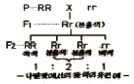
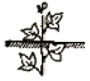
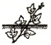

종자기능사 (2010-07-11 기출문제)
1과목: 종자(임의구분)
1. 종자의 외피가 두꺼운 경실종자의 휴면을 타파하는 방법으로 가장 적당하지 않는 방법은?
- 고온처리와 변온처리방법을 이용한다.
- 종피에 상처를 입힌다.
- 종자를 얼렸다 녹혔다를 반복한다.
- 원액의 황산에 오랫동안 담가둔다.
(정답률: 81%)

2. 다음 저장 조건 중 발아력이 가장 빨리 저하되는 조건은?
- 온도 17℃ 상대습도 35%
- 온도 19℃ 상대습도 57%
- 온도 21℃ 상대습도 57%
- 온도 25℃ 상대습도 65%
(정답률: 74%)
3. 양파 채종적지의 개화기 강우량으로 가장 적당한 것은?
- 월 강우량이 150mm 이하
- 월 강우량이 200 ~ 250mm
- 월 강우량이 300 ~ 350mm
- 월 강우량이 350mm 이상
(정답률: 66%)
4. 단명종자로만 나열된 것은?
- 양파, 파
- 상추, 가지
- 오이, 참외
- 토마토, 호박
(정답률: 84%)
5. 자발휴면의 종류로 틀린 것은?
- 수분, 온도 및 햇볕에 의한 휴면
- 배의 미숙에 의한 휴면
- 종피에 의한 휴면
- 내성적 발아억제물질에 의한 휴면
(정답률: 77%)
6. 종자의 퇴화 증상이 아닌 것은?(오류 신고가 접수된 문제입니다. 반드시 정답과 해설을 확인하시기 바랍니다.)
- 효소 활성의 저하
- 호흡저하
- 종자 침출액의 감소
- 유리 지방산의 증가
(정답률: 81%)
7. 종자의 형태에서 외형에 나타나는 특수기관의 설명으로 틀린 것은?
- 종자가 배병 또는 태좌에 붙어 있는 곳을 제(濟)라 한다.
- 배주의 한 끝에 있고 종자에서는 발아공이라고 하는 것을 주공이라 한다.
- 도생배주에서 생긴 종자의 특성으로 종피와 다른 색을 띠며 가는 선이나 또는 홉을 이룬 것을 우류라 한다.
- 봉선의 가장 끝에 있는 정을 합정이라 한다.
(정답률: 75%)
8. 육성한 품종을 세대별로 유지하면서 증식, 보급하는 4단계의 설명으로 틀린 것은?
- 기본식물은 육종가에 의해 생산된 종자이다.
- 원원종은 보급종자의 생산을 위해 증식하는 종자이다.
- 원종은 원원종에서 생산된 종자이다.
- 보급종은 원종에서 생산되는 종자이다.
(정답률: 77%)
9. 피자식물의 배와 배유에 관한 내용으로 옳은 것은?
- 배(2n)는 웅핵 + 난핵, 배유(2n)는 웅핵 + 극핵
- 배(2n)는 웅핵 + 난핵, 배유(3n)는 웅핵 + 극핵
- 배(3n)는 웅핵 + 난핵, 배유(2n)는 웅핵 + 극핵
- 배(3n)는 웅핵 + 난핵, 배유(3n)는 웅핵 + 극핵
(정답률: 83%)
10. 종자 전염성 병해충을 방제하는데 있어서 저장 중인 종자에 처리하는 약제가 갖추어야 할 구비조건이 되지 못하는 것은?
- 사용이 편리해야 한다.
- 약효기간이 짧아야 한다.
- 인체에 해가 없어야 한다.
- 병해충 방제에 효과적이어야 한다.
(정답률: 90%)
11. 광발아 종자의 발아를 가장 촉진시키는 빛의 파장은?
- 적색광
- 청색광
- 자외선
- 노란색광
(정답률: 86%)
12. 발아억제물질이 아닌 것은?
- 암모니아
- 시안화수소
- 카이네틴
- 페놀산
(정답률: 59%)
13. 종자 저장 관리에 있어서 흡습제(吸濕劑)로서 가장 일반적으로 사용되고 있는 것은?
- 소등 클로라이드
- 염화칼슘
- 펄라이트
- 유황분말
(정답률: 93%)
14. 종자내의 바이러스 불활성을 위해 건열(乾熱)이 유효하다. 건열이 온도로 가장 많이 쓰이는 것은?
- 20 ~ 30℃
- 40 ~ 50℃
- 60 ~ 80℃
- 90 ~ 100℃
(정답률: 73%)
15. 무배유 종자인 것은?
- 벼
- 보리
- 콩
- 옥수수
(정답률: 78%)
16. 전중량(全重量)이 5g, 순정종자 중량이 4.7g 일 때의 순정종자율로 맞는 것은?
- 90%
- 92%
- 94%
- 96%
(정답률: 75%)
17. 자웅(諮雄) 양성(兩性)의 기관이 형태적ㆍ기능적으로 완전하니 어떤 교배에서는 수정이 되어 종자를 만들지만 특정한 교배조합에서는 수분이 되면서도 수정이 되지 않거나 또는 조자가 형성되지 않는 성질을 무엇이라 하는가?
- 웅성붙임성
- 불화합성
- 웅성기임
- 자옹동주
(정답률: 67%)
18. 저장 중에 있는 종자를 가해하는 해충은?
- 쌀비구미
- 담배나방
- 벼물바구미
- 진딧물
(정답률: 75%)
19. 종자휴면의 주 원인만으로 바르게 짝지어진 것은?
- 산소의 공급, 두꺼운 종피
- 두꺼운 종피, 양분의 과다한 축적
- 산소 공급의 저해, 종피의 기계적 저항
- 배의 미숙, 산소의 공급
(정답률: 70%)
20. 벼의 발아력에 대한 설명으로 가장 거리가 먼 것은?
- 이삭 상부의 종자가 하부에 비해 발아가 빠르고 발아율도 높다.
- 저장기간이 길어질수록 발아율은 낮아진다.
- 약 -10℃의 저온 하에서 저장하면 10년 이상 두어도 발아력을 잃지 않는다.
- 종자의 비중이 작은 것이 발아력이 강하다.
(정답률: 62%)
2과목: 작물육종(임의구분)
21. 농업과 육종과의 관계에 대한 설명으로 틀린 것은?
- 육종은 생물의 유전적 소질을 개량하여 새로운 형의 우수한 개체군을 만드는 일을 말한다.
- 육종의 과정은 진화과정과 비슷하며 육종의 내용 또한 진화에서처럼 환경변이와 주로 관련된 것이다.
- 식물 육종은 농업과 함께 시작되었으며 그 결과 수많은 야생식물들이 오늘날의 유용한 재배 작물로 변화 하였다.
- 농업과 관련된 여러 분야 중에서 특히 육종학은 다양한 학문과 밀접한 관계를 갖는 종합 학문이다.
(정답률: 65%)
22. 재래종을 수집하여 육종을 하려고 할 때 제일 먼저 실시해야 할 것은?
- 교잡을 실시한다.
- 비료시험을 한다.
- 선발을 실시한다.
- 재식거리 시험을 한다.
(정답률: 62%)
23. 유전자가 tt로 된 식물체의 화분을 유전자가 TT로 된 식물체에 수분시키면 종자에서 배(胚)와 배유(胚乳)의 유전자 조성은?
- 배 TTt, 배유 Tt
- 배 Tt, 배유 TTt
- 배 Tt, 배유 Ttt
- 배 Ttt, 배유 Tt
(정답률: 74%)
24. 양적형질에 관한 설명으로 옳은 것은?
- 변이가 연속적이고 환경에 의한 영향이 크다.
- 변이가 연속적이고 환경에 의한 영향이 작다.
- 변이가 불연속적이고 환경에 의한 영향이 크다.
- 변이가 불연속적이고 환경에 의한 영향이 작다.
(정답률: 62%)
25. 유전력에 관한 설명으로 틀린 것은?
- 유전력이 낮을수록 선발 효과가 크다.
- 표현형의 전체 분산 중 유전자형에 의한 분산의 비율을 뜻한다.
- 자식성 작물 집단의 경우 후기 세대로 갈수록 유전력이 높아진다.
- 유전력은 광의의 유전력과 협의의 유전력이 있다.
(정답률: 70%)
26. 농작물 품종의 특성 유지방법이 아닌 것은?
- 격리 재배
- 영양번식에 의한 보존 재배
- 원원종 재배
- 집단 재배
(정답률: 71%)
27. 유전적 요인에 의한 붙임성이 아닌 것은?
- 생식기관에 의한 붙임성
- 불화합성에 의한 붙임성
- 영양결핍에 의한 붙임성
- 교잡붙임성
(정답률: 72%)
28. 질적 형질에 해당하는 것은?
- 초장
- 꽃 색깔
- 개화기
- 분열수
(정답률: 88%)
29. 신품종의 구비조건 중 균일성에 관한 정의로 가장 적합한 것은?
- 품종의 본질적인 특성이 그 품종의 번식 방법상 예상되는 변이를 고려한 상태에서 충분히 균일한 경우를 말한다.
- 품종의 본질적인 특성이 반복적으로 중식된 후에도 그 품종의 본질적인 특성이 변하지 않고 균일한 경우를 말한다.
- 개체군이 재배할 때만 지장이 없을 정도로 균일해야 한다.
- 집단군이 재배할 때만 지장이 없을 정도로 균일해야 한다.
(정답률: 56%)
30. 일대잡종 종자 채종시 자가불화합성을 이용해서 상업적으로 종자를 얻는 대표적 작물은?
- 배추
- 토마토
- 고추
- 오이
(정답률: 64%)
31. 수박을 뇌수분 시킬 때 발생하는 현상은?
- 착과가 양호해진다.
- 종자량이 많아진다.
- 수정이 안된다.
- 과실비대가 촉진된다.
(정답률: 56%)
32. 일대잡종 종자 생산의 이론적 배경이 되는 멘델의 유전법칙으로 가장 적절한 것은?
- 우열의 법칙
- 분리의 법칙
- 독립의 법칙
- 분열의 법칙
(정답률: 58%)
33. 암술에 속하는 부분은?
- 꽃받침
- 꽃밥(약)
- 꽃실(화사)
- 씨방(지방)
(정답률: 75%)
34. 우리나라에서 맥류의 육종 방향으로 적절하지 않은 것은?
- 초다수성 품종 육성
- 청예사료용 품종 육성
- 조숙양질 품종 육성
- 직파재배 적응성 품종 육성
(정답률: 49%)
35. 작물육종의 전망으로 알맞은 것은?
- 육종의 목표가 단일화 될 것이다.
- 유전자 조작기술의 발달로 유전자원은 중요하지 않게 될 것이다.
- 형질전환기술의 이용이 적어질 것이다.
- 신품종 개발에 관한 지적재산권이 보호될 것이다.
(정답률: 76%)
36. 적색과 백색을 교배 했을 때 F1은 분홍색, F2는 적색 1 : 분홍색 2 : 백색 1의 비율로 분리될 경우 다음 중 어디에 해당하는가?

- 보족유전자
- 억제유전자
- 불완전우성
- 완전우성
(정답률: 60%)
37. 일대잡종 품종의 장점으로 틀린 것은?
- 농가에서 자가생산이 용이하다.
- 생산성이 높다.
- 품질 및 형질이 균일하다.
- 내병성이 우수하다.
(정답률: 67%)
38. 상동염색체의 상동부분에 있는 두 유전자를 무엇이라 부르는가?
- 동형접합체
- 이형접합체
- 복대립유전자
- 대립유전자
(정답률: 59%)
39. 품종 교체의 요인과 가장 거리가 먼 것은?
- 농업인구의 정체
- 재배 방식의 변화
- 병해충 발생의 증가
- 농업용 간척지의 개발
(정답률: 78%)
40. 1개의 생식핵으로부터 몇 개의 웅핵이 생성되는가?
- 2개
- 4개
- 1개
- 8개
(정답률: 69%)
3과목: 작물(임의구분)
41. 작물의 광합성에 효과적인 빛으로만 나열된 것은?
- 황색광, 청색광
- 청색광, 적색광
- 적색광, 황색광
- 주황색광, 녹색광
(정답률: 88%)
42. 전분증자 작물로만 나열된 것은?
- 벼, 보리, 조, 옥수수
- 벼, 보리, 땅콩, 옥수수
- 벼, 보리, 옥수수, 유채
- 벼, 보리, 조, 해바라기
(정답률: 82%)
43. 다음 그림은 고구마 싹을 심는 방법이다. 토양이 건조하지 않고 싹이 클 대에는 어떤 방법으로 심는 것이 가장 좋은가?


(정답률: 72%)
44. 24cm × 20cm 간격으로 모를 심었을 때 1m2당 포기수는?
- 10
- 20
- 30
- 40
(정답률: 75%)
45. 세계 3대 식량작물로 옳게 묶인 것은?
- 밀, 벼, 보리
- 밀, 벼, 콩
- 밀, 벼, 옥수수
- 밀, 콩, 옥수수
(정답률: 87%)
46. 작물에 대한 설명으로 틀린 것은?
- 현재 재배되는 작물은 개량으로 인하여 기형화 된 것이 많다.
- 인간이 개량한 작물은 불량환경에 더 강하다.
- 작물재배는 인간의 안정된 생활과 인구 증가의 가장 큰 원인이라 볼 수 있다.
- 인류의 운명은 작물의 기원지와 밀접한 관계가 있다.
(정답률: 67%)
47. 핵과류에 속하는 작물은?
- 오이
- 감
- 토마토
- 복숭아
(정답률: 84%)
48. 벼가 저온에 의해서 피해를 가장 심하게 받는 시기는?
- 유효분열기
- 최고분열기
- 유수분화기
- 감수분열기
(정답률: 59%)
49. 식용 감자와 고구마의 저장온도 범위로 가장 적합한 것은?
- 감자 1 ~ 4℃ 고구마 5 ~ 10℃
- 감자 1 ~ 4℃ 고구마 12 ~ 15℃
- 감자 12 ~ 15℃ 고구마 1 ~ 4℃
- 감자 5 ~ 10℃ 고구마 1 ~ 4℃
(정답률: 65%)
50. 벼의 생육과정 순서로 가장 적합한 것은?
- 활착기 → 분열기 → 유수형성기 → 수잉기
- 활착기 → 유수형성기 → 분열기 → 등숙기
- 수잉기 → 등숙기 →유수형성기 → 활착기
- 분열기 → 염화분화기 → 유숙기 → 수잉기
(정답률: 58%)
51. 옥수수의 형태적 특성으로 틀린 것은?
- 옥수수는 암수 딴 그루이다.
- 수이식은 줄기의 끝에, 암이삭의 줄기의 중간마디에 달린다.
- 옥수수의 씨앗 색깔은 여러 가지가 있다.
- 옥수수의 씨뿌리는 1개이고 많은 겉뿌리가 나온다.
(정답률: 63%)
52. 벼의 밀생 중 물의 소요량이 가장 많은 시기는?
- 수잉기
- 묘대기
- 활착기
- 분열기
(정답률: 85%)
53. 경종적 병충해의 방제 방법과 거리가 먼 것은?
- 돌려짓기
- 파종기 조절
- 동물방역
- 저항성 품종 선택
(정답률: 80%)
54. 벼의 도정에 대한 설명으로 옳은 것은?
- 제현된 쌀을 정백미라 한다.
- 정백미는 현미 무게의 약 92%이다.
- 벼의 과피 껍질을 벗겨 내는 것을 정조라 한다.
- 제현율은 벼 무게의 64 ~ 74%이며, 부피로는 45%이다.
(정답률: 52%)
55. 벼 재배시 유수형성기에 주는 거름은?
- 밑거름
- 분멀거름
- 알거름
- 이삭거름
(정답률: 61%)
56. 산성토양에 대한 작물의 적응성이 매우 강한 것들로만 바르게 짝지워진 것은?
- 벼, 호밀, 땅콩
- 유채, 보리, 완두
- 콩, 자운영, 알팔파
- 호밀, 유채, 보리
(정답률: 69%)
57. 장일성 작물에 해당하는 것은?
- 벼
- 보리
- 옥수수
- 콩
(정답률: 37%)
58. 우리나라에서 가장 많은 재배 면적을 차지하는 작물은?
- 핵류
- 두류
- 벼
- 잡곡
(정답률: 90%)
59. 육묘시 주로 발생하는 병은?
- 모잘록병
- 탄저병
- 노균병
- 흰가루병
(정답률: 77%)
60. 가을보리를 봄에 씨뿌리기를 하려면 어떤 조치를 해주어야 하는가?
- 저온 처리
- 고온 처리
- 단일 처리
- 장일 처리
(정답률: 74%)